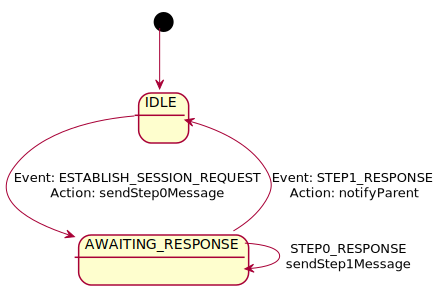

Establish a connection with the peer.
| ESTABLISH_SESSION_REQUEST | STEP0_RESPONSE | STEP1_RESPONSE | |
|---|---|---|---|
| IDLE | sendStep0Message returns:
transition : AWAITING_RESPONSE |
transition : none |
transition : none |
| AWAITING_RESPONSE | transition : none |
sendStep1Message returns:
transition : none |
notifyParent returns:
transition : IDLE |
| Events | |
|---|---|
| ESTABLISH_SESSION_REQUEST | |
| STEP0_RESPONSE | |
| STEP1_RESPONSE | |
| States | |
|---|---|
| IDLE | |
| AWAITING_RESPONSE | |
| Actions | |
|---|---|
| sendStep0Message |
Start the session establishment process.
Returns:
|
| sendStep1Message |
Continue session establisment
Returns:
|
| notifyParent |
Notify parent that session is established.
Returns:
|